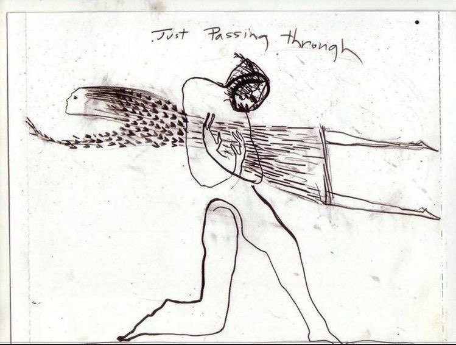

埃克哈特的根基神秘主义，“根基”（grunt）及其词族在非德语民族的神秘主义语言中并没有等价物，因此根基成为了埃克哈特神学中的主人隐喻。根基的神秘主义涉及到一种关于“流”的形而上学，它本身展开为两条道路，一条是作为第一恩典的流出之路，第二条道路则是作为第二恩典之“回流”（reditus）。在本原发出流溢的阶段，神圣根基的内部如同加热一般进入“沸腾”（bullitio），它在自身中发光并在自身里液化，经历在自身内的爆裂和涌破（uzbruch）。在这片沸腾的海洋中，圣父作为principium生出“子”的位格（理念、肖像、逻各斯），并使父与子共同发出的爱成为圣灵。沸腾的第二阶段则是“外溢”（ebullitio），使创世发生并进入分割与数目之中。根基从此在人的灵魂深处作为“微小的火花”、“小城堡”而存在，并且与神性始终保持潜在同一。人将会通过自我弃绝的操作达成“突破”，“穿透”三一体并且重新进入到根基之单纯寂静中。在与根基的神秘合一中，精神将不再为事物动摇：“真正的超脱无非是：精神在面对可能降临在它身上的一切——喜与悲、荣与辱、羞愧与耻辱——时，保持巍然不动；正如一座铅山立于一缕微风之前。这种巍然不动的超脱把人带入与上帝最伟大的同等之中：因为上帝正是凭借其不可动摇之超脱而其为神，而也正是凭借其超脱，他才获得他的纯净、单纯与不朽。”
